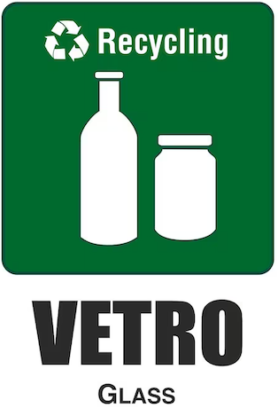

COME SEPARARE CORRETTAMENTE I NOSTRI RIFIUTI
ALCUNE BUONE REGOLE
GLI IMBALLAGGI (flaconi, bottiglie, barattoli, etc.) DEVONO ESSERE PRIVI DI CONTENUTO E PULITI
SCHIACCIARE E ROMPERE I CARTONI PER RIDURNE IL VOLUME
È IMPORTANTE RIDURRE IL VOLUME DEGLI IMBALLAGGI
MULTIMATERIALE LEGGERO

  |
Gli imballaggi (flaconi, bottiglie, barattoli etc.) devono essere privi di contenuto e puliti. È importante ridurre il volume dei rifiuti. PLASTICA Bottiglie e imballaggi di plastica con la scritta PET, PE, PVC, PP-PS. In particolare: IMBALLAGGI ALIMENTARI IN PLASTICA: Piatti e bicchieri di plastica; Bottiglie, flaconi o contenitori per acqua, bibite, olio, succhi, latte, creme, salse, yogurt, etc; Confezioni rigide per dolciumi (es: scatole trasparenti e vassoi interni); Confezioni rigide/flessibili per alimenti in genere (es: affettati, formaggi, pasta fresca, frutta e verdura, etc); Buste e sacchetti per alimenti in genere (es: pasta, riso,salatini, patatine, caramelle, surgelati, etc); Vaschette porta uova o barattoli per alimenti; Vaschette o barattoli per gelati; retine per frutta e verdura. IMBALLAGGI NON ALIMENTARI IN PLASTICA: Flaconi per detersivi, saponi, prodotti per l’igiene; Film e pellicole da imballaggio; Blister o contenitori rigidi e formati a sagoma (es: gusci per giocattoli); Buste di confezionamento di capi di vestiario; Gusci, barre, chips da imballaggio in polistirolo espanso per piccoli contenitori Reggette per legatura pacchi; Sacchi, sacchetti, buste (es: shoppers non biodegradabili, sacchi per detersivi, per alimenti di animali etc). CARTONI PER BEVANDE (TETRAPAK) Contenitori in poliaccoppiato per latte, succhi di frutta, passate di pomodoro, vino, panna, etc. METALLO Lattine in alluminio, barattoli di metallo per alimenti ed ogni altro imballo di metallo, coperchi di barattolo, bombolette spray senza gas infiammabile. |
CARTA
 |
Nella raccolta della carta devono essere conferiti giornali, riviste, fogli e cartoncini di ogni genere, imballaggi di cartone per alimenti e scatole di cartone, che devono essere opportunamente liberate da eventuali imballi di plastica, polistirolo o PVC e quindi ben schiacciate. |
INDIFFERENZIATO
 |
Nella raccolta dei rifiuti indifferenziati finiscono le cose che non possono essere riciclate, come tubi per innaffiare, mozziconi di sigaretta, audio o video cassette, CD o DVD, posate di plastica, assorbenti igienici, pannolini, salviette umidificate, scontrini, bastoncini per le orecchie, lettiere per animali domestici, accendini, aghi, batuffoli di cotone, bicchieri di vetro, carta accoppiata con alluminio, carta da forno, carta per salumi e formaggi, carta plastificata, carta sporca, cerotti, fazzoletti di carta sporchi, chewing gum, guanti in gomma, gusci di cozze e vongole, rasoi da barba, spazzolino da denti, stracci, etc. |
ORGANICO

 |
Nella raccolta dell’organico vanno conferiti tutti i rifiuti di origine animale o vegetale, come avanzi di cucina (frutta e verdura, pane, gusci di uova, fondi di caffè, etc.) Possono inoltre essere conferiti anche tovaglioli usati e bustine di tè. |
VETRO

|  | Bottiglie, flaconi e imballaggi vuoti in vetro vanno portati presso le campane verdi presenti sul territorio. |